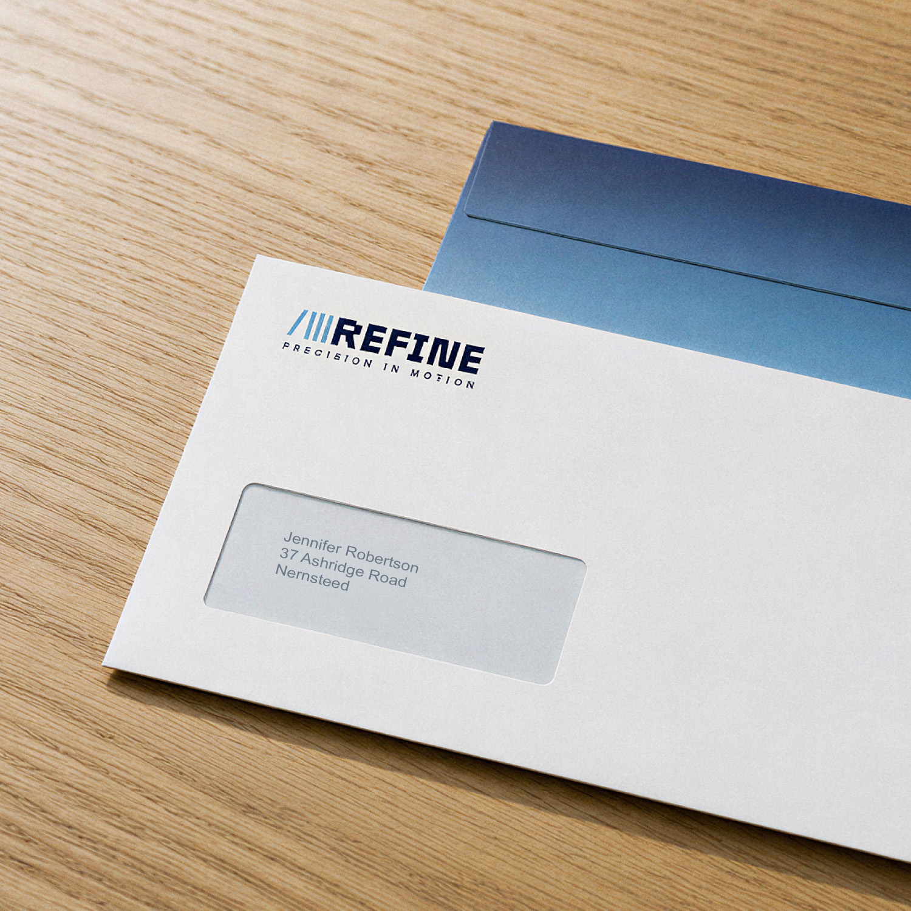
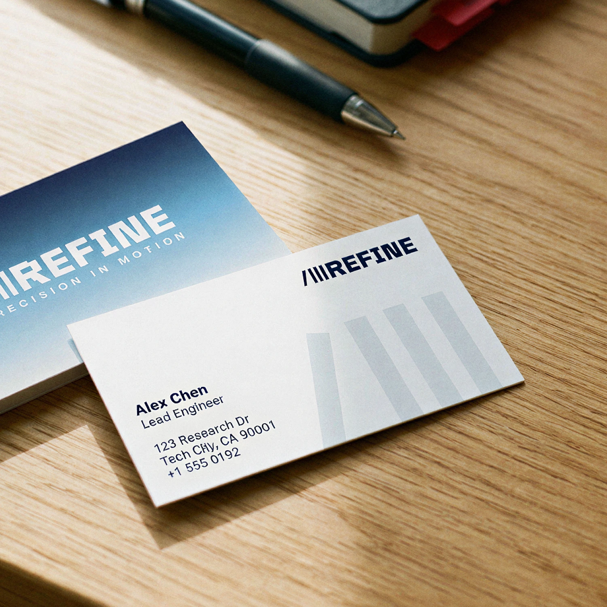
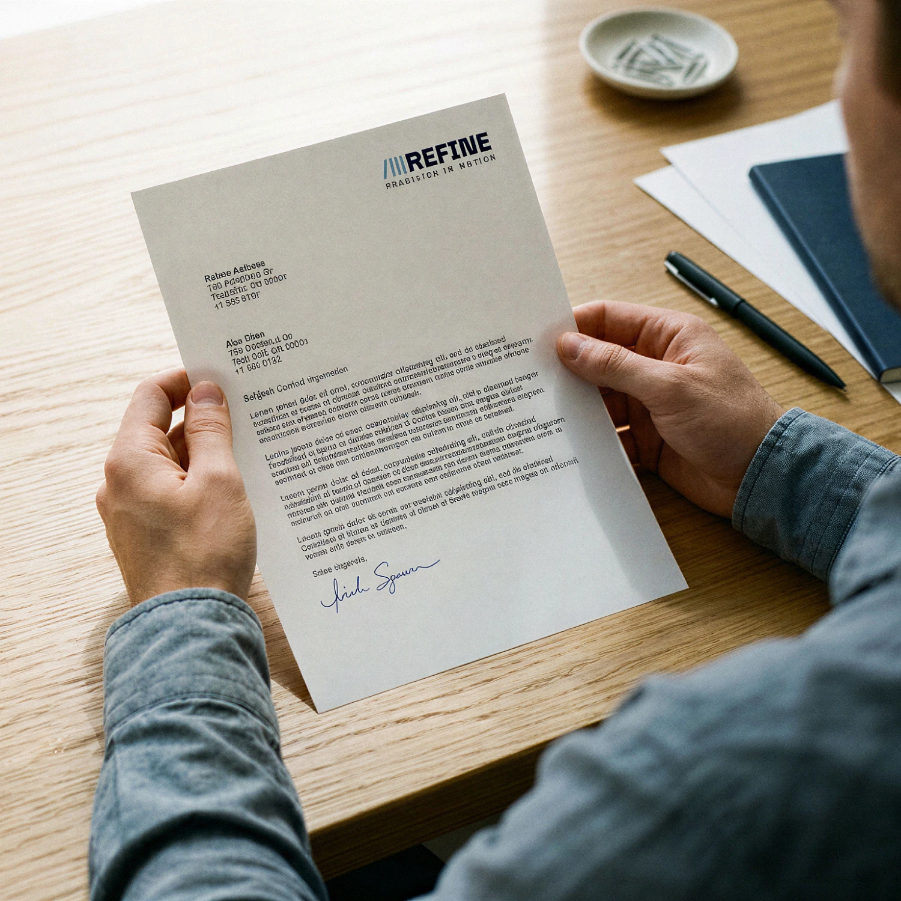
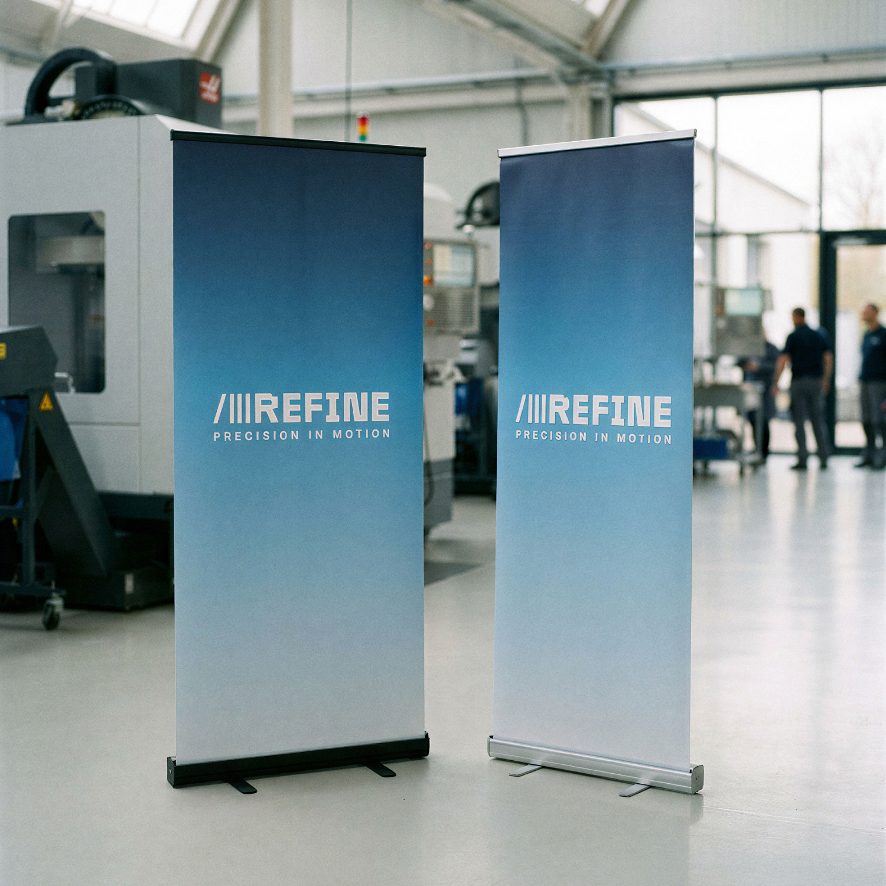
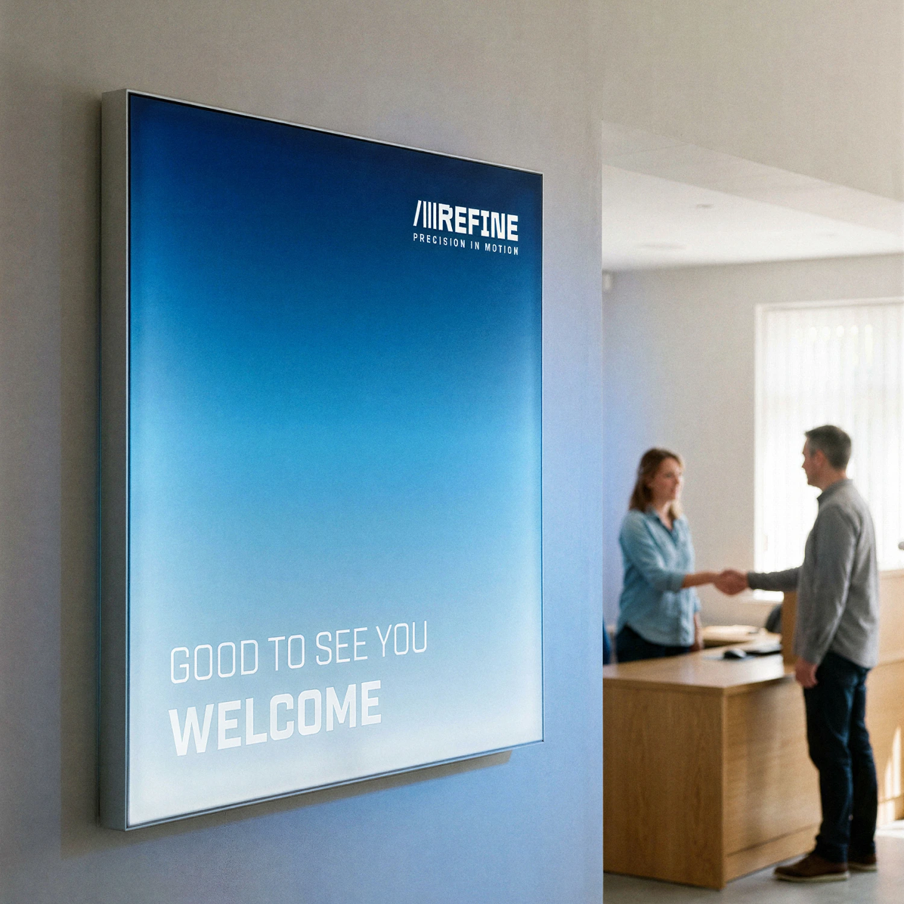
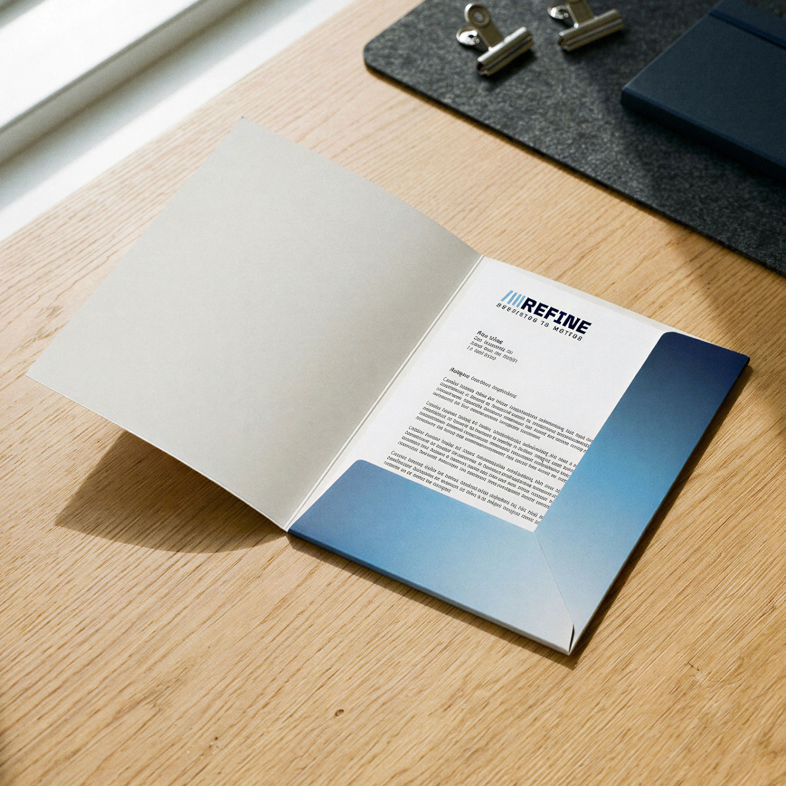

Mockups put us in a bind. Show a product carrying our own branding and it keeps the company front of mind, but the customer never sees what it could look like for them. A baker can't picture their business cards when every example says Onlineprinters.
My proposal was to build our own fictional customers. Six or seven brands, each fully designed, appearing again and again across our channels over the coming months until they read as recognisable examples rather than stock filler. They cover the range we actually sell to: hospitality, gastronomy, public sector, education, retail and so on.
This is the first. Refine, a robotics and automation company, aimed at our classic B2B customers in tech and industry. I designed the logo and a rough set of brand guidelines, then built the image world with Claude and Nano Banana Pro. That part took the longest. An editorial photographic style with its own framing, lighting and colour grading, consistent across every single shot, so it reads as one brand's photography instead of a folder of AI images.
The style is now a Claude skill, so everyone on the team can use it. The next brand doesn't start from zero, and the look stays the same no matter who builds it.






Drop me a message:
work@maxinehargrove.com